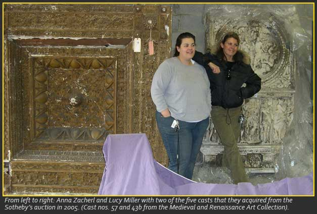

The Last Casts
Neophytes with "Good Chi"
In 2005 two George Mason students, Lucy R. Miller and Anna Zacherl learned about an upcoming auction at Sotheby's New York, in which the remaining plaster casts belonging to the Metropolitan Museum of Art were to be sold.
As undergraduates, the students ambitiously took it upon themselves to travel up to New York and participate in the auction. As a result Lucy and Anna learned all about the prestigious auction world, participated in the bidding, and successfully acquired the last casts of the George Mason Plaster Cast Collection.
But that's not all! After acquiring the rather large and cumbersome pieces, the women endured New York traffic obstacles, mechanical misshaps, and other surpises along the way.
Lucy R. Miller has humorously and intellectually chronicled their entire adventure from arriving in New York to delivering the last casts to George Mason. This is the story of their laudable feat.
